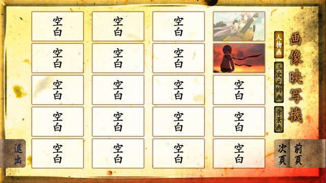

タイトル画面
| しおりから始める | クイックセーブデータから始めます。 |
|---|---|
| 最初から始める | ゲームを最初から始めます。 |
| 電光記録盤を開く | ロード画面を開きます。 |
| 設定画面を開く | 環境設定画面を開きます。 |
| 特別付加目録を開く | エクストラ項目を閲覧します。 |
| 終了する | ゲームを終了します。 |
セーブ＆ロード画面
最大で100個のゲームデータを保存することができます。
セーブデータが保存されていない場所をクリックすることでセーブが可能です。
- 最新のゲームデータにはサムネイル右側に「新」マークが付いています。
バックログ画面
ゲーム中、一度読んだメッセージの履歴を読むことができます。ホイールで表示させることもできます。
スピーカーアイコンをクリックすることで、音声が再生されます。
エクストラ項目
タイトルメニューの「特別付加目録を開く」から各種エクストラ項目を閲覧することができます。
画像映写機

イベントCGを閲覧します。
回想映写機

シーン回想を閲覧します。
電磁蓄音機＆動画映写機
音楽やムービーを閲覧します。
劔冑回転目録
登録された劔冑を閲覧します。
環境設定画面
ゲーム中の各種設定を変更することができます。
基本設定
ゲームに関する基本的な設定を行います。
| 初期設定に戻す | 選択すると、環境設定が全て初期設定に戻ります。 |
|---|---|
| ゲーム全般の処理速度 |
ゲーム演出のスピード設定を行います。 お使いのPCが推奨環境に達していない場合、演出上のコマ落ち等が発生してしまう場合があります。その場合、「遅」の方向へバーを調節してゲームスピードを遅くすることで、症状を緩和できることがあります。
|
| 各設定時の確認メッセージ | セーブの上書きやロード等を行う際に確認メッセージを表示するか設定できます。 |
| 動画の中断及びスキップ | ゲーム中のムービーをクリックで中断するか設定できます。 |
テキスト設定
文字表示速度等の設定を行います。
| メッセージスピード | テキストの表示速度を設定できます。 |
|---|---|
| 選択肢で自動文字送り＆スキップを解除する | 選択肢を選択した後に、自動テキスト送り、スキップ進行を解除するか設定できます。 |
| 未読時でもスキップ | 一度も読んでいないテキストもスキップできるように設定できます。 |
| 文字送り時の音声再生 | キャラクターの音声が再生されている時にテキストを送ると、音声再生が停止するように設定できます。 |
| 自動メッセージ送りの待ち時間 | 自動テキスト送りの時に、次のテキストが表示されるまでの待ち時間を設定できます。 |
| 自動メッセージ送りの音声設定 | 自動テキスト送りの時に、テキストが全て表示されても音声再生が終わるまで待つか設定できます。 |
サウンド設定
BGM、SE、音声の音量調整およびON/OFFの設定を行います。
| 楽曲を再生する | BGMを再生するかどうかの設定ができます。 |
|---|---|
| 楽曲の音量調整 | BGMの音量設定ができます。 |
| 効果音を再生する | SEを再生するかどうかの設定ができます。 |
| 効果音の音量調整 | SEの音量設定ができます。 |
| 音声を再生する | 音声を再生するかどうかの設定ができます。 |
| 音声の音量調整 | 音声の音量設定ができます。 |
| 各キャラクターの音声設定 | キャラクター毎に音声を再生するかどうかの設定ができます。 |
| 音声再生実験 | 上記で設定した音声の音量を確認することができます。 |
ディスプレイ・モニター設定
| フルスクリーン時のアスペクト比 ‐自動簡易設定‐ |
フルスクリーン時の縦横比補正を自動で設定します。 |
|---|---|
| フルスクリーン時のアスペクト比 ‐上級者用詳細設定‐ |
フルスクリーン時の縦横比補正を手動で設定します。
|